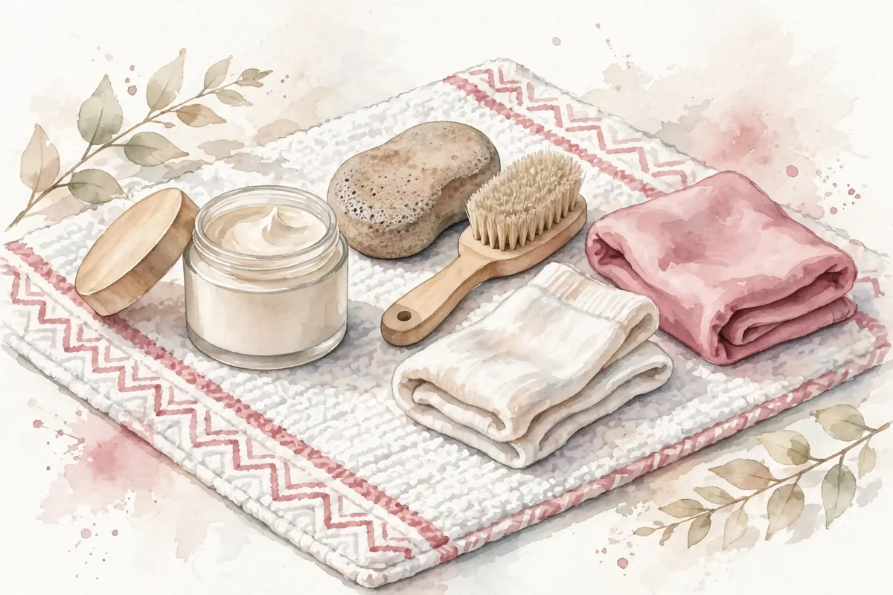
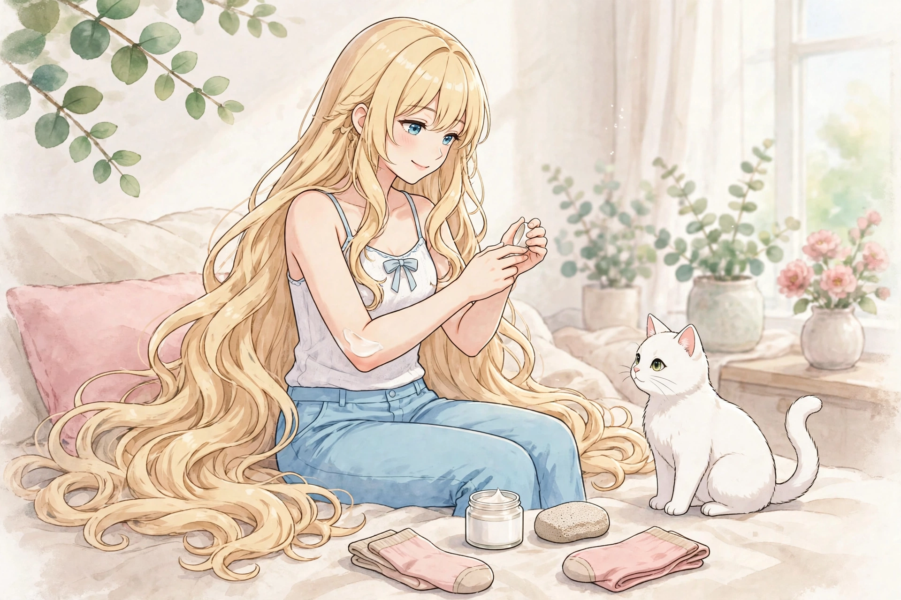

トップ ＞ ボディケア ＞ かかと・ひじ・ひざのパーツ別ケア
かかと・ひじ・ひざのパーツ別ケア

かかと、ひじ、ひざ。この3つは、施術の現場でも「硬く感じやすい部位」としてよく名前が挙がります。全身用のクリームを同じように塗るだけでは、なじみ方に物足りなさを感じることもあります。この記事では、パーツ（部位）別のケアの考え方を整理します。これは使い方の工夫の紹介であり、医療行為ではありません。皮膚に異常がある場合は、医療機関にご相談ください。
硬く感じやすい部位は「少量を重ねる」
かかとのような部位は、一度に厚く塗ると、表面で滑って広がりにくいことがあります。私が現場でやるのは、少量を塗ってなじませ、もう一度少量を重ねる、という2回に分ける方法です。量を分けることで、塗りむらに気づきやすくなります。
ひじやひざは、曲げ伸ばしで動く部位です。塗った直後に服の袖やズボンと擦れるため、塗るタイミングは着替えの少し前か、就寝前が扱いやすくなります。かかとに塗った後は、歩くと滑りやすいので注意が必要です。靴下をはく、座ったままの時間に塗る、といった工夫も現場ではよく話題になります。
パーツごとに、アイテムを分ける考え方
全身用とは別に、パーツ用のアイテム（かかと用、ハンド用など）を持っている方も多いと思います。使い分けの基準は、「質感」と「置き場所」です。こっくりした質感のものを硬く感じやすい部位に、軽い質感のものを広い面積に。そして、使う場所のそばに置くこと。かかと用なら脱衣所、手用なら水回り、という具合です。
アイテムを分けるほど管理は増えますので、まずは「全身用＋気になる1部位用」の2本体制から始めるのが現実的です。
触って確かめる習慣
パーツケアの基本は、触って確かめることです。塗る前に一度触って、硬さや乾燥の感じ方を確かめる。塗った後にもう一度触って、なじみ方を確認する。この往復が、量の調整の精度を上げます。施術者は毎日この確認をしていますが、自宅のケアでも、触る習慣はそのまま役に立ちます。
入浴時のひと手間も、パーツケアと相性の良い工夫です。湯船につかって身体が温まった後の方が、クリームの伸びが良く、少量でも広がりやすくなります。硬く感じやすい部位は、温まった状態で触ると、普段との感触の違いも分かりやすくなります。ただし、熱いお湯に長くつかることが体調に合わない方もいますので、入浴の仕方は無理のない範囲で調整してください。パーツケアは、部位・量・タイミングの3つを、その部位に合わせて組み立てるものです。
パーツケアは、毎日全部の部位を行う必要はありません。今日はかかと、明日はひじ、というように日替わりにするのも、無理のない進め方です。

セラフィナ「パーツごとにやり方を変えるのが、現場の基本だよ」